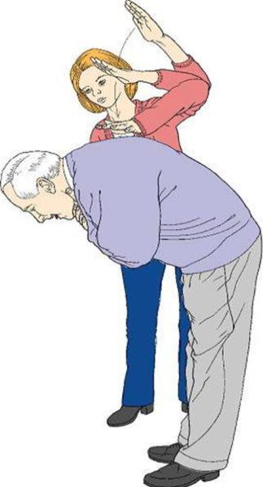
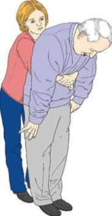

PRVA POMOČ PRI ZAPORI DIHALNE POTI PRI ODRASLIH
Zapora dihalne poti je lahko popolna ali delna. Vzroki za zaporo dihalne poti so lahko kri, bruhanje, tujki (denimo zobje, hrana, igrače …), neposredna poškodba obraza ali vratu, otekanje žrela (vnetje, pik žuželk …). Pri teh bolnikih je bistveno, da jim sprostimo dihalno pot.
Prepoznava dušenja je bistvena, saj se na podlagi prepoznave odločimo, kako bomo ukrepali. Tujki lahko povzročijo blago ali hudo zaporo dihalne poti. Ko opazimo splošne znake dušenja (napad se začne med jedjo, žrtev se lahko prime za vrat, siljenje na kašelj …), je treba bolnika vprašati: »Ali se dušite?« Pri lažji zapori ta odgovori, kašlja in diha. Pri hudi zapori pa to ni mogoče. Takrat bolnik ne more govoriti, lahko odgovori le s prikimavanjem in kretnjami. Opazimo še, da bolnik ne more dihati, sliši se hropenje, bolnik pa zaradi zastoja dihanja izgubi zavest.
PRVA POMOČ PRI LAŽJI ZAPORI DIHALNE POTI (ta postopek je primeren tudi za otroke od enega leta dalje)
Bolnika je treba spodbujati pri kašlju.
PRVA POMOČ PRI HUDI ZAPORI DIHALNE POTI
Če je bolnik pri zavesti, ga do petkrat udarimo po hrbtu. Stopimo ob bok bolniku nekoliko zadaj, podpremo prsni koš z eno roko, bolnik naj se nagne naprej, da mu tujek ne bi zdrsnil globlje v dihala. Nato s peto dlani do petkrat kratko udarimo med lopaticama. Po vsakem udarcu preverimo, ali se je dihalna pot sprostila. Cilj je sprostiti dihalno pot in ne dati vseh pet udarcev.

Slika 1: Udarci po hrbtu
Če s petimi udarci nismo bili uspešni, poskusimo s petimi pritiski na trebuh. Postavimo se za bolnika in položimo obe roki na zgornji del trebuha. (Pri nosečnicah ne pritiskamo na trebuh!) Bolnika nagnemo naprej, eno roko stisnemo v pest in jo položimo na sredino med popkom in žličko. Z drugo roko primemo prvo in na kratko, močno potisnemo navznoter in navzgor. Postopek ponovimo do petkrat.

Slika 2: Pritiski na trebuh
Če dihalna pot še ni sproščena, izmenično ponavljamo po pet udarcev med lopaticama in po pet pritiskov na trebuh, dokler nismo uspešni, če ponesrečeni izgubi zavest, postopek končamo in pokličemo reševalce.
Pritisk na trebuh lahko opravimo tudi pri sebi tako, da položimo pest nad popek, z drugo roko zgrabimo svojo pest in se sklonimo čez trdo površino (na primer stol) in nato potisnemo svojo pest proti sebi in navzgor.
Če bolnik izgubi zavest, ga pazljivo položimo na tla. Takoj pokličemo 112 in začnemo temeljne postopke oživljanja.
Kako prepoznamo lažjo zaporo dihalne poti?
Kako prepoznamo hudo zaporo dihalne poti?
Kako ukrepamo pri prvi pomoči ob hudi zapori dihalne poti pri odraslih?